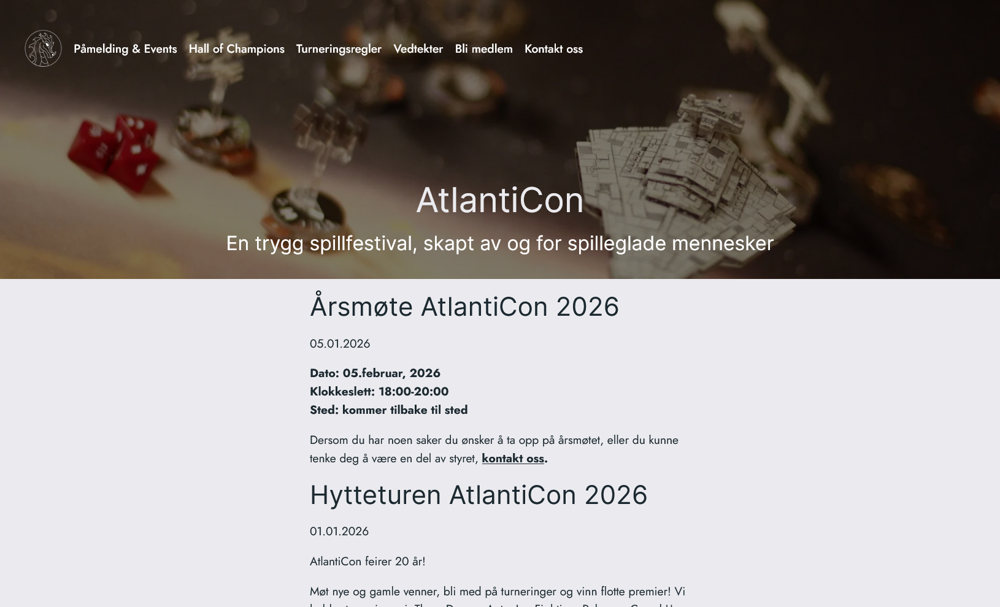
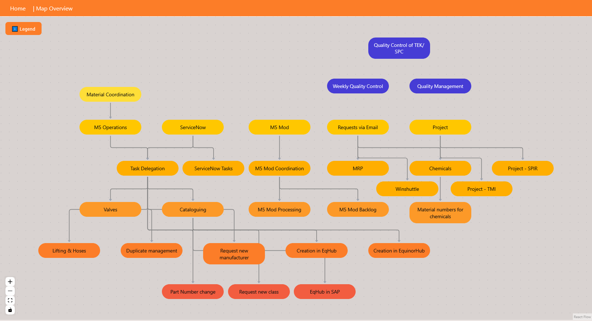
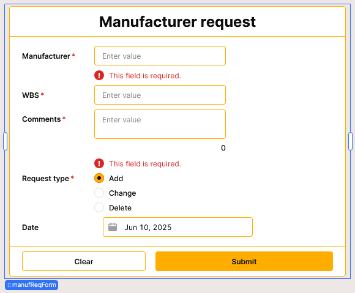

Prosjekter





Om Siw Årolilja
[siːv ɔːrʊˈliːja]
Frontendutvikler & UX/UI-designer
Jeg er frontendutvikler og UX/UI-designer med lidenskap for å lage intuitive og brukervennlige løsninger. Jeg elsker å kombinere logikk, struktur og kreativitet for å gjøre komplekse systemer enkle å bruke.
Min erfaring spenner fra å utvikle nettsider og interaktive dashboards, til å designe interne verktøy som forbedrer arbeidsflyt og produktivitet. Jeg jobber alltid med brukeren i fokus, og legger vekt på tydelige brukerreiser, konsistent design og ren kode.
Jeg trives i prosjekter der teknologi og design møtes, og der jeg kan bidra til å løse reelle problemer på en elegant måte.
- Frontend: HTML, CSS, JavaScript, React
- UX/UI: Brukerreiser, prototyping, wireframes
- Verktøy: Figma, Retool, Git, VS Code
- Komplekse datastrukturer og systemdesign
- Tilgjengelighet og universell utforming
- Brukerundersøkelser og testing
- Læring og utvikling, kjapp til å tilegne meg nye kunnskaper
Kontakt
Send meg en e-post: siw.arolilja@gmail.com
LinkedIn
GitHub